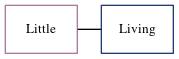

Charlotte Dale (née Bolding) c1822 - c1867
[ Home ] | [ Calendar ] | [ Surnames Index ] | [ Errors ] | [ Family History ]Charlotte Bolding, the wife of William Dale (the four times great-uncle of Nigel Horne), was born in Aldington, Kent, England c. 18221,2had 4 children, Elizabeth Ann, Thomas Henry, James Edward and George.
During her life, she was living in Chartham Hatch, Kent, England on 30 Mar 18511; and at Heath Farm Cottages, Canterbury, Kent on 7 Apr 18612.
She died c. 1867 in Bridge, Kent, England.
Children
- Elizabeth Ann was born c. Nov 1851
- Thomas Henry was born on 17 Apr 1854
- George was born c. 1859
Citations
- 1851 England, Wales & Scotland Census - Findmypast (was age 28 and the wife of the head of the household)
- 1861 England, Wales & Scotland Census - Findmypast (was age 39 and the wife of the head of the household)
Media
1851 England, Wales & Scotland Census - GBC/1851/0005785568
Family Tree
Map
Generated by ged2site. Last updated on Jul 3, 2024
Known Issues
Death date (abt 1867) has no citations